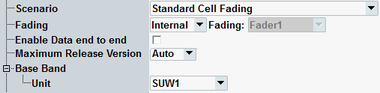

These settings are at the top of the configuration dialog.

Different test scenarios require different sets of parameters. Selecting a scenario hides/shows parts of the GUI as required by the scenario.
- "Standard Cell":
Standard WCDMA cell with one RF input path and one RF output path. - "Dual Carrier":
WCDMA cell supporting dual carrier HSDPA in downlink and single uplink carrier. Many parameters are configurable individually per carrier.
Multi-band support can be enabled by the parameter "DB DC HSDPA", see "DB DC HSDPA".
For single band configuration, the two downlink carriers can be also combined on one TX module. For the limitations, refer to "Output Power (Ior)". - "Standard Cell Fading", "Dual Carrier Fading", "Dual Carrier / Dual Band Fading":
"Standard Cell" or "Dual Carrier" plus fading and/or AWGN insertion. Carrier one and carrier two use different output paths.
An additional parameter "Fading" is displayed, refer to "Fading". - "Standard Cell RX Diversity Fading","Dual Carrier RX Diversity Fading" - single band:
Rx diversity simulates the two different receiving paths of the UE. Two TX modules are required. A fader superimposes fading on the original downlink signal for RX diversity tests.
In the dual carrier scenario, both carriers use the same TX output connector per path. The first TX output path is connected to the first antenna of the UE. The second TX output path is connected to the second antenna of the UE.
An additional parameter "Fading" is displayed, refer to "Fading". - "Dual Carrier RX Diversity Fading" - dual band:
Rx diversity simulates the two different receiving paths of the UE. For the two paths per carrier, four different TX modules must be used.
The path one of each carrier is used for the uplink and faded downlink signal connected to the first antenna of the UE. The second path of each carrier is used for the faded downlink signal connected to the second antenna of the UE.
An additional parameter "Fading" is displayed, refer to "Fading". - "Dual Carrier HSPA":
A UE configured with two adjacent downlink frequencies and two adjacent uplink frequencies supporting dual carrier R9 HSDPA in the downlink and dual carrier HSUPA in the uplink. The first uplink carries signaling and user data, the second uplink carries user data only. As specified in 3GPP TS 25.319, section 9, only 2 ms TTI frames are supported in the dual carrier HSUPA operation.
Many parameters are configurable individually per carrier. During the dual carrier HSUPA operation, dedicated channels (DCH) are not supported. - "3C HSPA":
A setup with three carriers R10 HSDPA in downlink and dual carrier HSUPA in uplink. In the dual carrier HSUPA operation, only 2 ms TTI frames are supported.
Two downlink paths are required: one TX module for DL1 and DL3 and a different TX module for DL2. The two uplinks can be routed via the same RX module. Many parameters are configurable individually per carrier.
During the dual carrier HSUPA operation, dedicated channels (DCH) are not supported. There is no multi-band support in the "3C HSPA" scenario.
The individual scenarios are only offered for selection if the required software and hardware options are available.
- Single-CMW setups
In a single CMW, you can equip up to 4 TX and up to 4 SUW or up to 2 SUA. You can execute a scenario on a single CMW. But you can also use the scenario with a multi-CMW setup. - Multi-CMW setups
The instruments are controlled by an R&S CMWC. The test software including the WCDMA signaling application is installed and executed on the R&S CMWC.
The options can be distributed over several instruments. But the signaling units (SUA or SUW), TX modules and I/Q boards for each carrier must be in the same instrument. Example: For one carrier, you cannot use a signaling unit of one instrument plus the TX modules of another instrument.
The SW licenses are pooled in the R&S CMWC, so it does not matter where they are installed. - SUA vs. SUW
Each SUA board provides two SUA partitions. The GUI and the remote commands select SUA partitions, not SUA boards. In one CMW, you have up to four SUA partitions or up to four SUW.
For fading with the SUW, you need an I/Q board. For fading with the SUA, you need additional SUA resources.
You can combine SUA and SUW in a single CMW, but one scenario uses only SUW or only SUA, not both in parallel. A CMW with SUA cannot contain I/Q boards.
All listed options are R&S CMW-... options. Example: KE100 means R&S CMW-KE100.
The following table lists all scenarios. It covers instruments with SUA and instruments with SUW. You need either the indicated number of SUA partitions (column "SUA") or the indicated number of SUW boards plus I/Q boards.
With SUW | With SUA | |||||
|---|---|---|---|---|---|---|
Scenario | TX | RX | SUW | I/Q 1) | SUA 2) | Software options |
"Standard Cell" | 1 | 1 | 1 | - | 1 | - |
"Dual Carrier" (single band) | 1 | 1 | 1 | - | 1 | KS404 |
"Dual Carrier" (dual band) | 2 | 1 | 1 | - | 1 | KS405 |
"Standard Cell Fading" (external) | 1 | 1 | 1 | 1 (A or F) | n.a. | KS410 |
"Standard Cell Fading" (internal) | 1 | 1 | 1 | 1 (F) | 2 | KS410, KE100, KE400 |
"Standard Cell RX Diversity Fading" (external) | 2 | 1 | 1 | 1 (A or F) | n.a. | KS410 |
"Standard Cell RX Diversity Fading" (internal) | 2 | 1 | 1 | 1 (F) | 2 | KS410, KE100, KE400 |
"Dual Carrier Fading" (external) | 2 | 1 | 1 | 1 (A or F) | n.a. | KS404, KS410 |
"Dual Carrier Fading" (internal) | 2 | 1 | 1 | 1 (F) | 2 | KS404, KS410, KE100, KE400 |
"Dual Carrier RX Diversity Fading" (single band, external) | 2 | 1 | 1 | 1 (A or F) | n.a. | KS404, KS410 |
"Dual Carrier RX Diversity Fading" (single band, internal) | 2 | 1 | 1 | 1 (F) | 2 | KS404, KS410, KE100, KE400 |
"Dual Carrier RX Diversity Fading" (dual band, external) | 4 | 1 | 2 | 2 (A or F) | n.a. | KS405, KS410 |
"Dual Carrier RX Diversity Fading" (dual band, internal) | 4 | 1 | 2 | 2 (F) | 4 | KS405, KS410, KE100, KE400 |
"Dual Carrier / Dual Band Fading" (external) | 2 | 1 | 1 | 1 (A or F) | n.a. | KS405, KS410 |
"Dual Carrier / Dual Band Fading" (internal) | 2 | 1 | 1 | 2 (F) | 3 | KS405, KS410, KE100, KE400 |
"Dual Carrier HSPA" (single band) | 1 | 1 | 2 | - | 2 | KS405 |
"Dual Carrier HSPA" (dual band) | 2 | 2 | 2 | - | 2 | KS405 |
"3C HSPA" | 2 | 1 | 2 | - | 2 | KS406 |
1) Number of required I/Q boards and in brackets the board type. The first I/Q board of an instrument is R&S CMW-B510x, the second board is R&S CMW-B520x. "x" can be "A" (no internal fading) or "F" with internal fading. 2) SUA partitions for signaling function + fading. n.a. means that the scenario is not supported with SUA. | ||||||
Remote command:
Commands with the selection of signaling unit:
Selects between external fading via a connected fader (e.g. R&S SMW200A) and internal fading.
For internal fading, you can select the I/Q board or SUA partition to be used. If two signaling applications use internal fading at the same time, use diverse internal faders to avoid conflict.
This parameter is only displayed for the fading scenarios.
Remote command:Configured via the scenario selection command, see "Scenario".
Enables the IP-based data tests involving the data application unit (DAU).
The parameter is only displayed if a DAU and option R&S CMW-KA100 are available.
For general prerequisites, required options and background information see "End-to-End Packet Data Connections".
Remote command:Specifies the maximum release of the cell signal. Automatic setting respects the installed R&S CMW options and the UE capabilities.
This parameter allows you to verify the release downwards compatibility of the UE (e.g. the tests of Rel.10 UE within Rel.5 UTRAN).
Option R&S CMW-KS410 is required.
Remote command:Selects the signaling unit to be used for a carrier. This setting is especially useful for multi-CMW setups, to control which carrier is available at which instrument.
Remote command:Configured via the scenario selection command, see "Scenario"